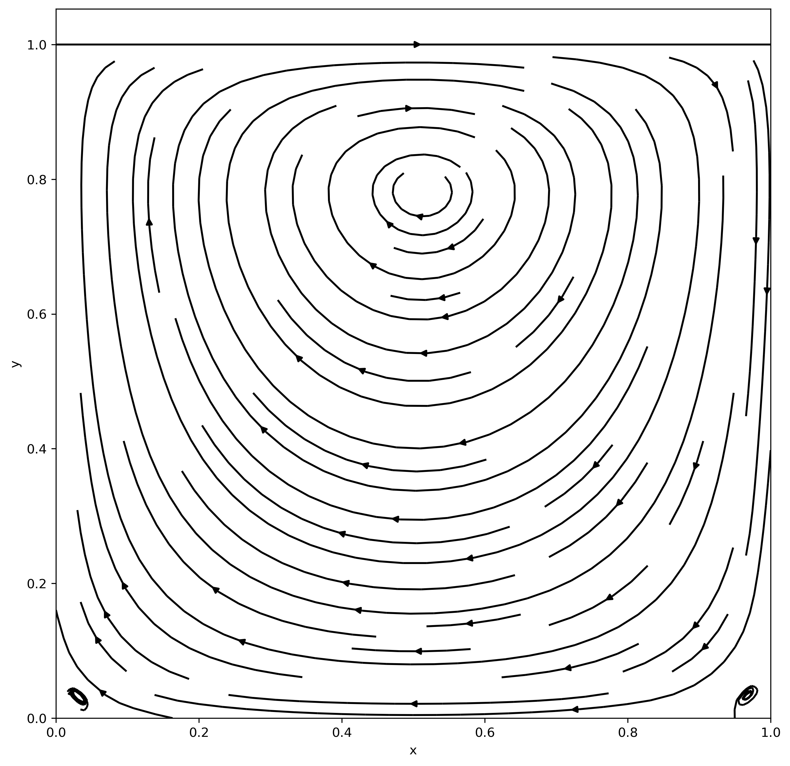

Numerical solutions to the Navier-Stokes equations
Hello, World!
This blog post presents my undergraduate project on the numerical solutions to the Navier-Stokes equations. You can find more information by reading the project report here, or check the associated GitHub repository.

Main ideas
The idea is simple - using numerical methods to approximate solutions to the Navier-Stokes equations. The particular setup that I used was not too interesting and was chosen because it is a good toy example, you can find all of the details are in the PDF linked above. Here I will present only the main ideas:
- Compare different approaches to solve the problem: time-stepping methods versus finding the steady-state solution by using Newton-Raphson iteration.
- Compare different implementations of the methods and their running speeds and memory usage.
- Learn more about optimization and scientific computing and, most important of all, have fun!
Opportunities for growth
As mentioned above, I had many opportunities to strengthen my understanding of optimization and scientific computing. In particular, I:
- Learnt about various (non)linear optimization methods: least- quares, Newton-Raphson iteration, Gauss-Newton method, LBFGS, etc.
- Learnt how these methods can be used through various Python packages (
SciPy,PyTorch, but alsoJAXwhich I found to be amazing, expect more projects built onJAXin the future!). - Compared the performance of the various methods using the different implementations.
- Also learnt the basic of
nbdevand really enjoyed using it, for example, it made testing and publishing the code extremely easy (just for fun, I put up the code on PyPI).
Findings
You can find many more findings in the linked PDF, but the most interesting findings to me seem to be:
- Newton-Raphson iteration is much faster than time-stepping methods (although that is only true in this particular case - it is not always possible to apply this method).
- As can be seen in this notebook,
PyTorchandJAXperform faster both on CPU and GPU, but that’s probably expected. - On a GPU,
PyTorchandJAXperform mostly the same. I expectedJAXto be faster due to the fact that it uses jitting, but maybe the scale of the problem was not large enough to see a real difference (might be an interesting direction for future work).
Limitations
I feel content with the project for now, but here is a (inexhaustive) list of things that could be improved:
- The current solvers are specific (the specifics of the problem are hard-coded into them). It might be worth abstracting the parts that define the problem into a separate entity and make the solvers operate on that entity.
- There is a lot of code that was written in a rush, so it is not always as elegant as it could be.
- More tests could be added.
Conclusion
I found the project exciting and I hope you found it interesting reading this blog post. It was fun learning JAX and nbdev and highly recommend everyone to try them. I Do not hesitate to contact me if you have any questions. Until next time!